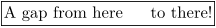
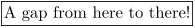

Contents
Commands and Arguments
The commands in your input file can have the following appearance:
| Appearance of command | Example |
|---|---|
\startcommand ... \stopcommand |
\starttext ... \stoptext
|
\startcommand[] ... \stopcommand |
\startitemize[packed] ... \stopitemize
|
\command |
\item
|
\command[] |
\in[cuyler]
|
\command{}[] |
\at{page}[cuyler]
|
\command{} |
\index{America}
|
\command[]{} |
\framed[foregroundcolor=blue]{The Cuyler family}
|
Defining new commands
-
Commands with Key=Value arguments
: (Topic: things like
\command[thiskey=thatvalue].) - Commands with optional arguments : (Topic: one or more optional arguments within brackets.)
Use of brackets
One must not confuse with the LaTeX convention where "mandatory" arguments are contained in curly braces and brackets indicate "optional" arguments.
Curly braces not only give grouping but generally are used for objects to be typeset, as for \in{Figure}{a} [fig:ref].
For new users, it is worth repeating here that arguments within braces can be either a comma-separated list of words OR a comma-separated list of keyword=value pairs, BUT NOT A MIXTURE OF BOTH. Generally, a keyword=value exists for all words, for example \cite[authoryear][ref] and \cite[alternative=authoryear,reference=ref]
values can be grouped using curly braces, as in \cite[alternative=authoryear,lefttext={{see },}][ref1,ref2] where the lefttext is associated with the first cite reference (and none with the second). This can be tricky but is in fact rather straight-forward.
Using variables
There are several ways to handle variables in ConTeXt. The recommended and easiest method is to use the \setvariables and \getvariable macros. Doing it this way you also avoid to get in conflict with already defined stuff (as variables use their own namespace).
To store variables, you can use the \setvariables macro.
% stores value in variable namespace:key \setvariables[namespace][key=value] % stores the expanded value \setevariables[namespace][key=value] % global \setgvariables[namespace][key=value] % global and expanded value \setxvariables[namespace][key=value]
Use \getvariable to process a variable. Reading an undefined variable results in the \empty token. This is not a serious problem, as long as you expect text only. But be warned: the compilation process breaks, if you expect a dimension or number. So better take care, that you define your variables, before you use them.
% gets value of the variable namespace:key \getvariable{namespace}{key}
To avoid problems, also pay attention to the following:
You can set several variables (same namespace) at the same time. So the command \setvariables logically uses the plural form and works with square brackets. On the other hand you can only process one variable at the same time, so \getvariable uses the singular form and works with braces.
OK, here comes a simple example. Let's say, that we want to have variable space before and after a letter macro called \Opening.
\long\def\Opening#1{% \getvariable{Letter:opening}{before} \noindent{\begstrut#1\endstrut} \getvariable{Letter:opening}{after} }
By using variables in your macros, you can separate the layout definition, so that your macros get much more flexible. Just ensure, that all variables are set, before you use them!
In this example we want to have a blank line in front of the opening, and two blank lines right after it. The value for the second key contains square brackets, so it must be enclosed in braces.
\setvariables[Letter:opening] [before=\blank, after={\blank[2*big]}, ]
You can now save this style setup (among others) in a separate file and include it at the start of your document (before \Opening is defined or at least used).
And don't forget: Ensure that all variables are set before you use them!
How to pass variable from TeX to Lua and vice versa? See CLD passing variables.
Special characters in command names
Some commands have special characters in their names, that TeX normally does not consider to be letters: @, ! and ?. Before and after the use or definition of such protected commands in your input files, the catcode of these characters has to be changed. This is done by \unprotect and \protect:
\unprotect \def\!test{alfa} \protect
The newly defined command \!test can of course only be called upon when we are in the \unprotected state, otherwise TeX reads the command \!, followed by the word test (and probably complains loudly about not being in math mode). These protection/unprotection commands can be nested. When the nesting becomes deeper than one level, the system reports the current protection level. It is a good habit to always start your macro files with \unprotect and end them with \protect.
Passing verbatim text as macro parameter
(For passing text to LuaTex verbatim, see the Programming in LuaTeX article on this wiki.)
In case you want to write macros that should handle verbatim text, you can use the tex primitives \obeyspaces and \obeylines. \obeyspaces changes the category code of the space character, so that spaces become significant. \obeylines does the same for the newline character.
This works fine for the following example:
\framed{\obeyspaces{A gap from here to there!}}
- 
But if you pass this text as a parameter for your own macro \TextWithSpaces
\def\TextWithSpaces#1{\framed{\obeyspaces#1}}% \TextWithSpaces{A gap from here to there!}
- 
the additional spaces are ignored. This happens because the category code change is not yet in effect when the argument is parsed, and the spaces are removed during parsing. To keep the spaces, the catcode change must be done before the argument is parsed.
Here is a two-part solution for the problem (suggested by Taco Hoekwater):
\def\TextWithSpaces{\bgroup\obeyspaces\doTextWithSpaces} \def\doTextWithSpaces#1{\framed{#1}\egroup}
Another way is to postpone argument loading (suggested by Hans Hagen).
\def \TextWithSpaces {\framed\bgroup\obeyspaces\doTextWithSpaces} \def\doTextWithSpaces #1{#1\egroup}
Both of these produce the desired result: